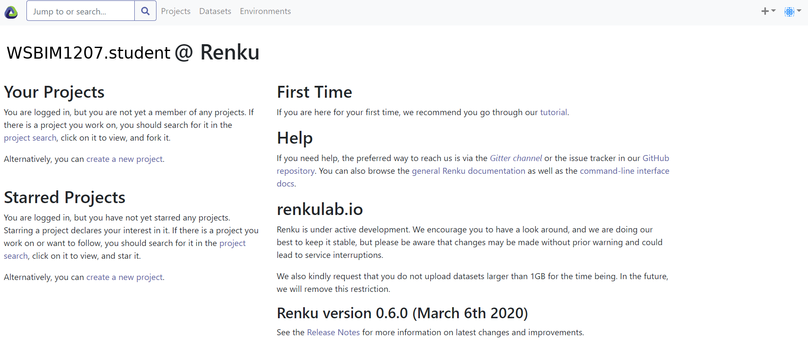

This section describes how to install R, Rstudio, and a set of important packages for the course.
If you use Windows, follow install R for the first time, then click the link to download R. The installation procedure is like any other software, and you can safely use all default options.
If you use Mac (OS X), download the pkg installer that matches you OS version and install like any other software
Linux users are advised to use their package manager.
Download and install the Rstudio Desktop Open source edition: https://rstudio.com/products/rstudio/download/#download. Choose the installer for your operating system and version. Install as any other software.
Start Rstudio and install the following packages:
install.packages(c("tidyverse", "rmarkdown", "remotes", "devtools"))
install.packages("BiocManager")
BiocManager::install("UCLouvain-CBIO/rWSBIM1207")If during any of the package installation steps, you get asked to update some packages, for example with a message like
Old packages: 'tinytex', 'TSP', 'tximeta', 'umap', 'vctrs', 'waveslim',
'xcms', 'xlsx', 'xml2'
Update all/some/none? [a/s/n]: You can answer a to update all your packages.
Compilation to html will not require any additional installations and can also be used.
An alternative to local installation is to use virtual machines that run in the cloud. Here, we will use Renku platform provided by the Swiss Data Science Center.
Once completed, you will get to the following (or similar) screen.
Figure 11.1: Renky labding page.
More details to come…
Page built: 2020-03-14